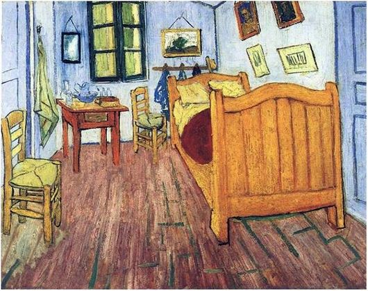

Спальня в Арле
Картина «Спальня в Арле» была написана Винсентом Ван Гогом в 1888 году во время проживания художника на юге Франции.
Работа изображает комнату художника в Жёлтом доме, который Ван Гог снимал в городе Арль. Интерьер кажется простым и почти пустым, однако именно через цвет и композицию художник передаёт ощущение спокойствия, отдыха и внутренней тишины.
Ван Гог специально использовал яркие контрастные цвета: голубые стены, красное покрывало, жёлтую мебель и зелёные элементы декора. Художник хотел добиться эмоционального восприятия, а не фотографической точности.
Перспектива комнаты слегка искажена, из-за чего пространство выглядит необычным и немного нереальным. Этот эффект стал одной из узнаваемых особенностей картины.
Сегодня «Спальня в Арле» считается одной из самых известных работ Ван Гога и символом его арльского периода творчества.